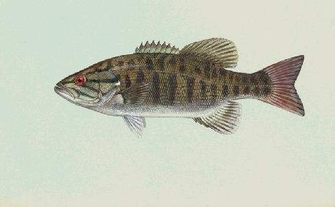

OneFish
About
OneFish is an open source distributed filesystem designed around the needs of
Hadoop. It runs on Linux and other POSIX-compatible operating systems.
Features
OneFish is written in C and designed for high performance.
OneFish is fault-tolerant. The failure of any single node-- including a
metadata node-- will not bring down the whole filesystem.
OneFish is designed to scale to many petabytes. You will not need to create
many different smaller filesystems to manage the data on your cluster.
OneFish provides HDFS semantics. This is roughly similar to NFS's open-to-close
semantics; see semantics for more details.
Community
Add mailing list here
Add website here
License
OneFish is licensed under the Apache Public License, version 2.0.
Author
The first version of this document was written by Colin Patrick McCabe <cmccabe@alumni.cmu.edu>